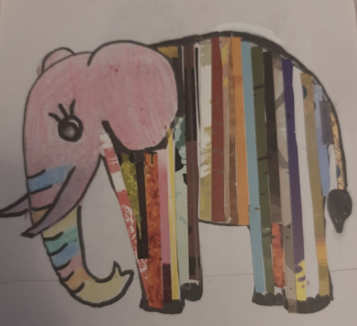
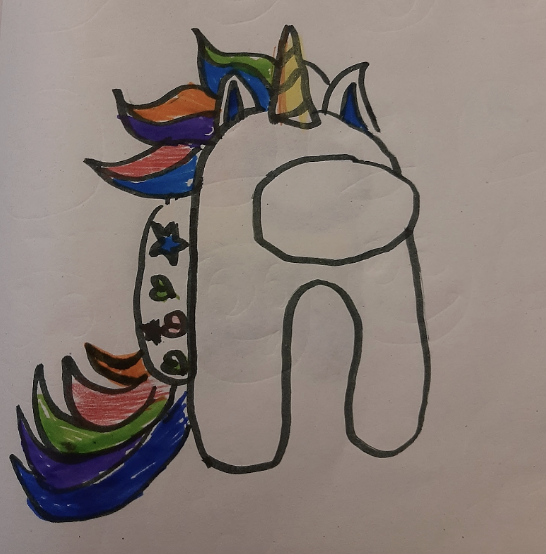
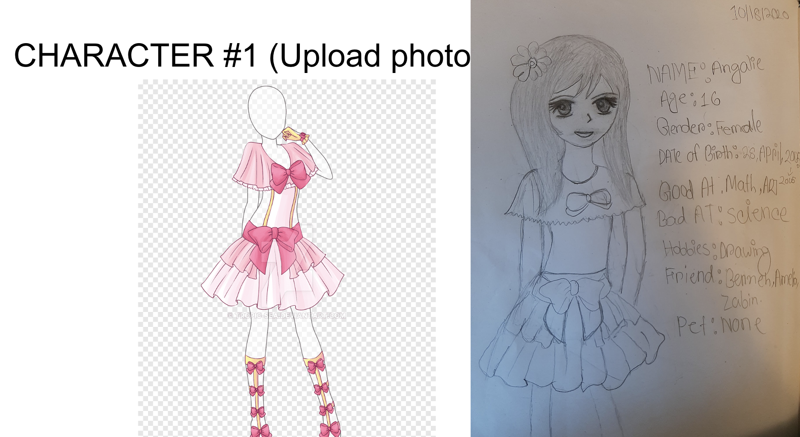

This is the visual design page
Home Page
ABout Me Page
Visual Design Page
WCP Page
Digital Design Page

This picture is meaningful to me because I cut out paper from variety magazines and book covers added all of them up together to color the elephant to give it a unique color.
....

This drawing was drawn by me. Which is why it is important for me because that was also the first time i
ever drawn any imposter.
....

This picture shown above was really important for me this is because we learned how to make creative drawings. Such as in the first picture it looks like a normal fish while in the second picture is transtion to completely different fish. Which gives surprising effects
....

For this assignment I drew a girl's costume that was inspired by a picture i found in google. This drawing is important to me because I tried my best to replicate the exact same dress on the girl I drew, which was quite challenging. However, I put in my best effort and was able to draw the dress exactly like the one in the picture. That's why I'm proud of this drawing.
....

The project was significant to me because I took a picture of an animal's habitat and then added the picture of the animal to it. This was done to create a more realistic effect in the image.
....

This image was created as part of an assignment where we were tasked with creating a theme by adding different images. Therefore, I added multiple images of different kinds of animals to show how they connect to nature and there importance.
....
Visual Design